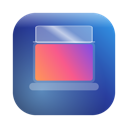

It follows your hand.
The effect tracks the MacBook's lid angle in real time. Reverse direction and the display follows you back.

Macbook DuoOPEN SOURCE · MADE FOR macOS · VERSION 1.0.0
Close the lid. Watch your desktop fold, roll, ripple or drain away.
Open it again, and everything comes back into focus.
Free and open source · macOS 13 Ventura or newer · Compatible lid sensor required · All releases and checksums
Generated artwork demonstrating Duo. Your actual desktop is animated locally on your Mac.
SMALL APP. TANGIBLE MOVEMENT.
The effect tracks the MacBook's lid angle in real time. Reverse direction and the display follows you back.
Pause at any comfortable angle. After your chosen 1–5 seconds, the desktop and live preview return to normal.
Settled previews stop rendering. Blur work is cached, with refresh limits that respond to power and temperature.
Desktop frames stay in memory on your Mac. No uploads, recordings, accounts or analytics.
TWELVE WAYS TO CLOSE
Duo is the default. Six new effects arrive in 1.0.0, each with its own tuning.
The desktop swells around the hinge as the lid closes.
The desktop holds its resting plane as the lid tilts and gently falls out of focus.
The desktop curls into a roll that travels down to the hinge.
Rigid panels telescope behind each other into the hinge.
One bowing flexible display collapses toward the hinge.
Eight overlapping blades close an aperture above the hinge.
The display creases across the middle and the top half folds down over the bottom.
Pleats zig-zag and gather toward the hinge like a paper fan.
Horizontal slats tilt and overlap like closing window blinds.
The whole desktop tips back as one rigid card in perspective.
Drapes draw together from both sides and settle at the hinge.
The desktop swirls into a black hole opening at the hinge.
A MINUTE TO GET STARTED
Open Macbook-Duo.dmg for Apple silicon or the Intel preview, then drag Macbook Duo into Applications.
Try opening Macbook Duo. This release is not notarized, so macOS may show "cannot be opened" or "Apple could not verify". Go to System Settings → Privacy & Security → Security → Open Anyway for Macbook Duo, then confirm Open. Apple's guide ↗
Press Replay to see the effect without any permission. Then click Enable Macbook Duo and allow Screen Recording when prompted. Reopen if macOS asks. Frames stay in memory on your Mac.
Macbook Duo speaks English, Simplified Chinese, Traditional Chinese and Japanese. Opt in to Open at login (launches start paused) and hide the menu-bar icon if you like. Use Check for Updates… → Install & Relaunch for architecture-aware updates from the official GitHub release; checks run only when you ask, and no desktop frames leave your Mac. If macOS blocks an update, use Privacy & Security → Open Anyway, then retry in the recovery dialog or restore the previous app. Prefer a ZIP? All downloads and checksums ↗
BUILT IN THE OPEN
Swift. Metal. No third-party runtime dependencies.
Read the source, build the app, or add the thirteenth effect.